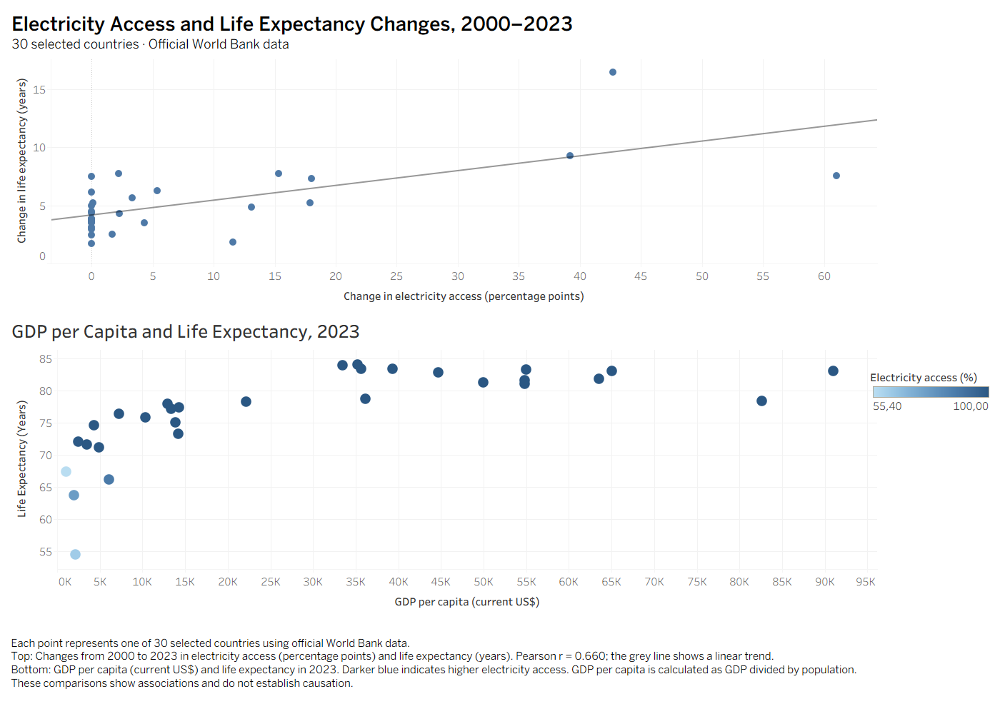

World Bank.
A world of connections.
What can electricity access, GDP per capita and life expectancy tell us about countries? I built a pipeline to collect the data, check it, and make those relationships easier to explore.


Explore the dashboardThe build, the findings, and the lessons
Behind the dashboard
The pipeline downloads official indicators for 2000–2023, validates coverage, loads PostgreSQL and records the refresh outcome. Tests check orchestration and preservation of the previous report when an export fails.
What the data shows
Across these 30 countries, larger electricity-access gains tended to accompany larger life-expectancy gains (correlation: 0.660). The second chart compares GDP per capita and life expectancy in 2023. Association does not establish causation.
What I learned
Reliable reporting takes more than a chart: consistent file paths, useful error messages, tests and scheduling conditions all matter. A missed monthly task later started automatically when the computer’s conditions allowed it.
The monthly task updates local data and both CSV reports. Tableau needs a refresh; this website’s dashboard image is a saved snapshot. GDP per capita is GDP divided by population, in current US dollars.